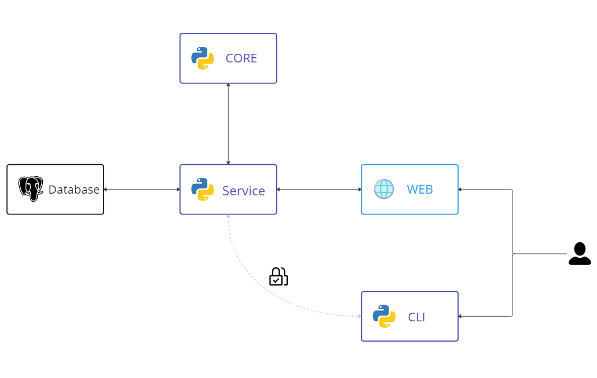
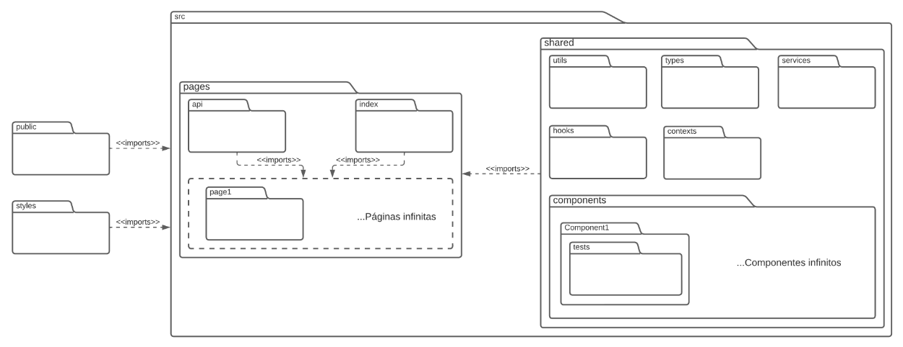
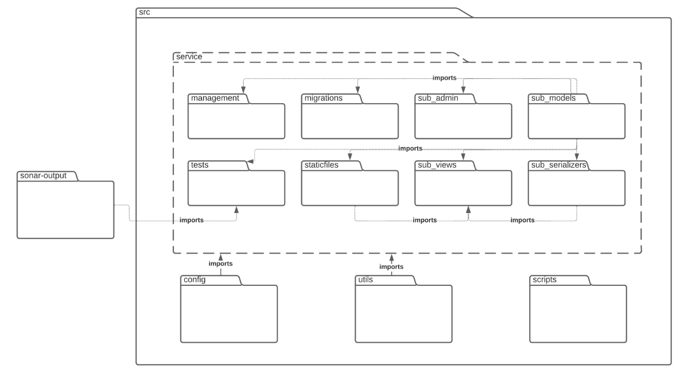
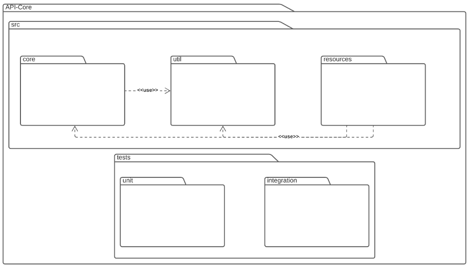
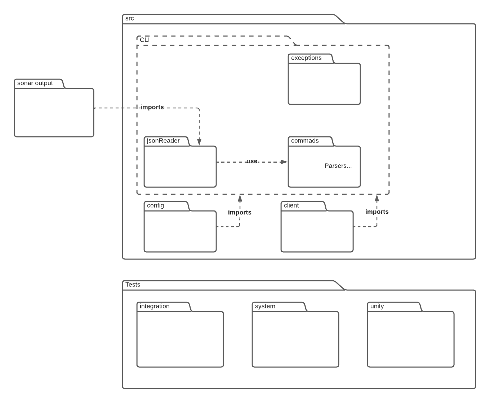

Documento de Arquitetura
Versionamento
| Data | Versão | Descrição | Autor(es) |
|---|---|---|---|
| 28/11/2022 | 1.0 | Criação do documento | João Victor Valadão e Ítalo Fernandes |
| 28/11/2022 | 1.1 | Adicionando Tecnologias | Ítalo Fernandes e João Victor Valadão |
| 28/11/2022 | 1.2 | Adicionando Metas e Restrições | Ítalo Fernandes e João Victor Valadão |
| 29/11/2022 | 1.3 | Adicionando Diagrama arquitetural | João Victor Valadão e Ítalo Fernandes |
| 29/11/2022 | 1.4 | Adicionando diagramas de pacotes e atualização do diagrama arquitetural | João Victor Valadão e Ítalo Fernandes |
| 30/11/2022 | 1.5 | Atualização da arquitetura diagrama de pacotes | João Victor Valadão e Ítalo Fernandes |
| 07/11/2022 | 1.6 | Revisão do documento | João Moura |
Introdução
Finalidade
Este documento tem como objetivo apresentar uma visão geral sobre a arquitetura do Measure SoftwareGram. Aqui estarão presentes informações sobre as tecnologias utilizadas no projeto, modelo de arquitetura seguido e as motivações que guiam essas escolhas
Escopo
Através desse documento, é possível obter um melhor entendimento da arquitetura do projeto, permitindo ao leitor a compreensão do funcionamento do sistema e as abordagens utilizadas para o seu desenvolvimento.
Visão Geral
- Introdução: Apresentar uma visão geral sobre o conteúdo dessa documentação;
- Representação de Arquitetura: Descreve as tecnologias e os padrões de arquitetura utilizados e informa as razões que motivaram tais escolhas;
- Metas e Restrições de Arquitetura: Fala sobre objetivos que buscam ser alcançados dentro da arquitetura escolhida;
- Referências: Emprega as fontes utilizadas nas pesquisas para relacionar as publicações que foram consultadas e citadas.
Representação de Arquitetura
Tecnologias
-
Python: Uma linguagem de programação de alto nível que permite a estabilidade do projeto com alta escalabilidade. Ele pode ser usado para criar interfaces simples em terminais de computadores.
-
JavaScript/TypeScript: Uma linguagem de programação de alto nível que é interpretada de forma estruturada. JavaScript é uma das três principais tecnologias da World Wide Web, junto com HTML e CSS. Usaremos TypeScript, que estende o JavaScript com digitação estática opcional.
Frontend
-
React: Um framework em JavaScript que suporta TypeScript, desenvolvida pelo Facebook. Proporciona o desenvolvimento de sites com mais facilidade e rapidez do que os tradicionais HTML, CSS e JavaScript.
-
Next.js: Uma estrutura da Web de desenvolvimento front-end React de código aberto criada pela Vercel, que permite geração de sites estáticos para aplicativos da Web baseados em React e recursos como renderização do lado do servidor.
Backend
-
Django: um Framework open source baseado em Python. Altamente escalável e robusto, foi projetado para resolver problemas comuns durante o desenvolvimento web, disponibilizando diversas facilidades como: ORM, autenticação, rotas, e migrations [1].
-
Jupyter Notebook: Uma ferramenta open source para criar e editar Notebooks. Sendo uma tecnologia baseada em Python.
CLI
CLI Abreviação de "interface de linha de comando". Este é um programa que permite aos usuários criar comandos para funções específicas passando instruções para o computador.
- PyPI: O Python Package Index [2] é um repositório para armazenar pacotes de código escritos na linguagem de programação Python.
Banco de dados
- PostgreSQL: Um sistema de gerenciamento de banco de dados relacional de software livre. Tem a capacidade de gerir os dados de forma organizada e eficaz.
Diagrama arquitetural

Diagrama de Pacotes
Web

Service

Core

CLI

Metas e Restrições de Arquitetura
Metas
| Metas | |
|---|---|
| Escalabilidade | A aplicação deverá ser escalável |
| Segurança | A aplicação deverá tratar de forma segura os dados sensíveis dos usuários |
| Deploy | A aplicação deverá possuir deploy automatizado |
Restrições
| Restrições | |
|---|---|
| Conectividade | Para utilização do Frontend é preciso ter conexão com a internet. Para utilizar o CLI isso já não é mais necessário |
| Plataforma | A aplicação possuirá suporte WEB e para linha de comando |
| Público | A aplicação será desenvolvida com foco em empresas de tecnologia e desenvolvedores |
| Linguagem | O inglês foi escolhido por conta das integrações com plataformas que já utilizam essa linguagem |
| Equipe | A equipe possui 11 integrantes |
| Prazo | O prazo é até o final do semestre 2022-2 (18/02/2023) da Universidade de Brasília |
Referências
[1] ROVEDA, Ugo; O que é Django, para que serve e como usar este framework. Disponível em: < https://kenzie.com.br/blog/django > Acesso em: 28 de Novembro de 2022
[2] Python Package Index Org. Disponível em: < https://pypi.org/. > Acesso em: 28 de Novembro de 2022
Template Documento de Arquitetura de Software. Disponível em: < https://github.com/DroidFoundry/DroidMetronome/wiki/TEMPLATE-Documento-de-Arquitetura-de-Software > Acesso em: 28 de Novembro de 2022
Arquitetura do Sistema (MeasureSoftGram-2022-1). Disponível em: < https://fga-eps-mds.github.io/2022-1-MeasureSoftGram-Doc/#/documentos/documento_de_arquitetura > Acesso em: 29 de Novembro de 2022